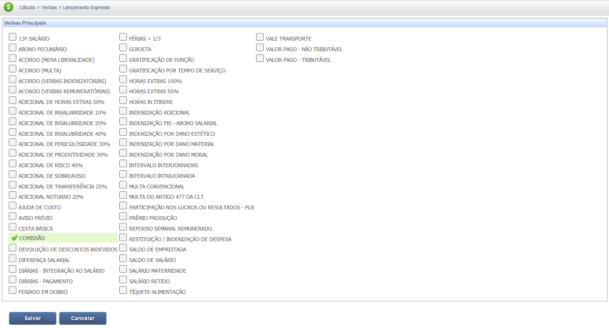
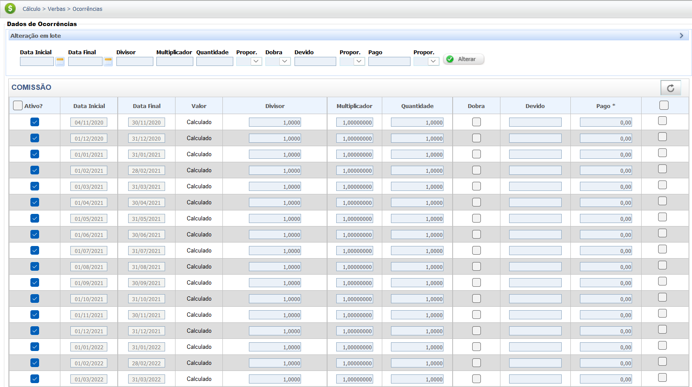

Comissão
A Comissão é a remuneração variável paga ao empregado em função do atingimento de metas de vendas ou participação em negócios. Por possuir natureza salarial, ela é considerada parte integrante do salário para todos os efeitos legais (CLT), como férias, 13º salário e FGTS. Geralmente é feito aplicando-se um percentual sobre o valor das vendas (brutas ou líquidas).
Modalidades de Comissionistas
Existem duas modalidades principais de comissionistas no regime da CLT:
| Tipo de Comissionista | Descrição | Garantia Mínima |
|---|---|---|
| Comissionista Misto | Recebe um salário fixo (base) mais as comissões sobre as vendas ou metas alcançadas. | Salário Fixo + Comissões. |
| Comissionista Puro | Recebe a remuneração exclusivamente por comissões. | Tem a garantia de receber, no mínimo, o salário mínimo legal ou o piso salarial da categoria profissional, caso o valor total das comissões apuradas no mês seja inferior a esse mínimo. |
A Distinção entre Comissão e Prêmio (Pós-Reforma Trabalhista)
A Reforma Trabalhista (Lei nº 13.467/2017) trouxe uma diferenciação importante entre Comissão e Prêmio, afetando a natureza jurídica de cada verba:
- Comissão: É parte do salário, paga como contraprestação pelo serviço e vinculada ao desempenho esperado (ex: vender produtos). Integra a remuneração e gera todos os encargos trabalhistas e previdenciários (INSS, FGTS, etc.).
- Prêmio: É uma liberalidade concedida pelo empregador em razão de desempenho superior ao ordinariamente esperado (ex: bater uma meta extraordinária). O Art. 457, § 2º e § 4º da CLT estabelece que os prêmios, mesmo que habituais, não integram a remuneração e, portanto, não constituem base de incidência de qualquer encargo trabalhista e previdenciário (exceto IRPF).
Atenção:
Se um pagamento é rotulado como "prêmio", mas é concedido pelo cumprimento da meta normal de trabalho ou com regularidade excessiva e previsível, a Justiça do Trabalho pode considerar que ele possui natureza salarial (de comissão) e determinar a integração à remuneração.
Exigibilidade e Prazo de Pagamento
O Artigo 466 da CLT estabelece que o pagamento das comissões só é exigível após a finalização do negócio (ultimada a transação). O pagamento deve ser feito imediatamente após a liquidação da venda (a quitação do valor pelo cliente) ou mensalmente, conforme o acordo contratual. É crucial que a base e o gatilho de pagamento (geralmente faturamento ou recebimento do cliente - *cash-in*) sejam claros no contrato.
Estorno de Comissões (Devolução)
A lei proíbe o estorno (devolução) da comissão se a venda for cancelada por motivos alheios à vontade ou culpa do empregado, como cancelamento por parte do empregador ou insolvência/inadimplência do cliente. O estorno só é permitido se o negócio não for concluído por culpa comprovada do empregado (como erro no pedido ou fraude).
Base Legal e Jurisprudência
O regime jurídico das comissões e sua natureza salarial, bem como a distinção legal entre comissão e prêmio, estão amparados pela legislação e jurisprudência a seguir:
Fontes Normativas
Consolidação das Leis do Trabalho (CLT):
- Art. 457, § 1º (Natureza Salarial da Comissão):
"Integram o salário a importância fixa estipulada, as gratificações legais e as comissões pagas pelo empregador."
- Art. 457, § 2º e § 4º (Natureza Indenizatóriado Prêmio):
"§ 2º As importâncias, ainda que habituais, pagas a título de ajuda de custo, auxílio-alimentação, diárias para viagem, prêmios e abonos não integram a remuneração do empregado, não se incorporam ao contrato de trabalho e não constituem base de incidência de qualquer encargo trabalhista e previdenciário. [...] § 4º Consideram-se prêmios as liberalidades concedidas pelo empregador em forma de bens, serviços ou valor em dinheiro a empregado ou a grupo de empregados, em razão de desempenho superior ao ordinariamente esperado no exercício de suas atividades."
- Art. 466 (Exigibilidade da Comissão):
"O pagamento de comissões e percentagens só é exigível depois de ultimada a transação a que se referem."
§ 1º. Em caso de rescisão de contrato, a cessação das relações de trabalho não prejudica a percepção das comissões e percentagens devidas na forma estabelecida por este artigo.
§ 2º. A aceitação do negócio pelo empregador importa a definitividade da transação, para fins de exigibilidade das comissões ou percentagens.
Jurisprudência
Integração da Comissão na Remuneração
Súmula nº 27 do TST (Reflexos da Comissão):
"As comissões constituem a remuneração do empregado, devendo, portanto, integrar o salário para todos os efeitos legais, inclusive para o cálculo do aviso prévio, 13º salário, férias e FGTS."
Natureza Salarial vs. Indenizatória (Prêmios)
Precedente sobre a Descaracterização do Prêmio:
"Embora a Reforma Trabalhista tenha estabelecido a natureza indenizatória dos prêmios, o pagamento habitual de verbas por atingimento de metas ordinárias ou meramente esperadas configura, na verdade, comissão. Em tais casos, é reconhecida a natureza salarial da parcela, com consequente integração à remuneração para todos os fins."
*(Nota: A Justiça do Trabalho, com base no princípio da primazia da realidade, pode descaracterizar o prêmio se este não estiver atrelado a um desempenho extraordinário.)*
Base de Cálculo e Deduções
IMPORTANTE: O valor total da Comissão Bruta deve integrar o valor da Remuneração Total (Salário-Base + Adicionais + H. Extras + Gratificações ) para fins de cálculo das deduções obrigatórias fiscais e para formação da base de cálculo das Verbas Reflexas.
Definição e Critérios da Base de Cálculo
O modo como a comissão é calculada é definido pelo empregador, respeitando o contrato de trabalho e as convenções coletivas. A Base de Cálculo é o montante sobre o qual incidirá o percentual de comissão.
Composição e Critérios da Base de Cálculo:
-
Percentual sobre o Valor da Venda (Mais Comum): O percentual é aplicado
sobre o valor total do produto ou serviço vendido (bruto ou líquido, conforme definido em
contrato).
Fórmula: Comissão = Valor da Venda $\times$ Percentual
-
Percentual sobre a Margem de Lucro: Cálculo sobre a diferença entre o preço
de venda e o custo (margem de lucro).
Fórmula: Margem de Lucro = Preço de Venda $-$ Custo do Produto
Comissão = Margem de Lucro $\times$ Percentual -
Valor Fixo por Unidade/Negócio: Um valor fixo é pago por cada unidade
vendida ou contrato fechado.
Fórmula: Comissão = Valor Fixo $\times$ Quantidade de Unidades Vendidas
Base e Gatilho de Pagamento: A comissão é geralmente calculada sobre o Valor Bruto da Venda. O ponto chave é o Gatilho de Pagamento (quando o pagamento é exigível), que deve ser claramente definido (geralmente faturamento ou recebimento do cliente - *cash-in*).
Exemplo Prático (Valor Bruto)
A comissão bruta é o resultado direto da aplicação do percentual acordado sobre a base de cálculo (valor da venda).
Fórmula: Comissão Bruta = Valor da Venda * Percentual de Comissão
Um empregado vendeu R$ 5.000,00 em produtos e tem uma taxa de comissão de 3%.
| Item | Valor / Detalhe |
|---|---|
| Valor da Venda (Base) | R$ 5.000,00 |
| Percentual de Comissão | 3% |
| Cálculo | R$ 5.000,00 * 0,03 |
| Comissão Bruta | R$ 150,00 |
Deduções da Base e Cálculo
Deduções Fiscais e Previdenciárias:
O desconto da contribuição para o Instituto Nacional do Seguro Social (INSS) e do Imposto de Renda Retido na Fonte (IRPF) é obrigatório, pois a comissão possui natureza salarial.
Deduções de Valores Pagos e Descontos Autorizados:
- Adiantamentos de Comissão: Valores antecipados ao empregado no mês.
- Descontos Autorizados: Descontos autorizados por lei, contrato ou acordo coletivo (ex: Vale-Transporte, planos de saúde).
Exemplo Prático (Valor Bruto - Deduções = Valor Líquido)
Considerando uma Comissão Bruta de R$ 2.000,00 e a aplicação de deduções fiscais e previdenciárias fictícias (sem descontos adicionais como VT/Adiantamento neste exemplo):
| Item | Valor |
|---|---|
| Comissão Bruta | R$ 2.000,00 |
| (-) Dedução INSS (9% Fictício) | R$ 180,00 |
| (-) Dedução IRPF (Isento Fictício) | R$ 0,00 |
| Total Deduções (INSS + IRPF) | R$ 180,00 |
| Comissão Líquida | R$ 1.820,00 |
Verbas Reflexas
Devido à sua natureza salarial (Art. 457, §1º da CLT), as comissões pagas habitualmente geram "reflexos", ou seja, integram a base de cálculo de outras verbas trabalhistas.
O cálculo dos reflexos é geralmente feito pela média aritmética das comissões recebidas nos últimos 12 meses, conforme a verba:
| Verbas Reflexas | Relação com a Comissão |
|---|---|
| Férias e Abono (1/3) | A média de comissões deve ser incluída na base de cálculo das férias e do respectivo abono constitucional. |
| 13º Salário | O valor médio das comissões é pago proporcionalmente ao 13º salário. |
| FGTS (8%) | As comissões (junto com a média) devem ser consideradas na base de cálculo mensal do depósito de 8%. |
| Aviso Prévio (Indenizado ou Trabalhado) | A média das comissões deve integrar a base de cálculo do aviso prévio no caso de rescisão. |
| Multa de 40% do FGTS | O valor da comissão e seus reflexos compõem a base para o cálculo da multa rescisória. |
Regra Comum de Média (Exemplo):
Se a média dos últimos 12 meses de comissões for R$ 1.500,00, este valor será somado ao salário fixo para compor a base de cálculo das verbas como 13º e Férias.
Atenção: A Súmula nº 27 do TST confirma que as comissões integram o salário para todos os efeitos legais (aviso prévio, 13º salário, férias e FGTS).
Calculadora (Simulação)
Utilize esta ferramenta para calcular o valor da comissão bruta com base no valor da venda e na taxa percentual acordada.
Cálculo Simples (Bruto)
Comissão = Valor da Venda $\times$ Percentual
Lançamento no PJe-Calc
A seguir, confira o passo a passo para o lançamento da verba no PJe-Calc, utilizando a opção "Expresso":
-
Acessar Verbas e Escolher Lançamento: No menu de
navegação à esquerda, clique na opção Verbas para iniciar o lançamento. Após o
comando,
será exibida a tela para escolha do Lançamento da Verba. Escolha a opção Expresso.

- Seleção da Verba: O sistema abrirá as opções de verbas, escolha a verba Comissão e clique no botão Salvar 
-
Quadro de Verbas e Ações: O sistema exibirá um quadro
com os campos:
- Ações - contendo as opções de configurações da verba selecionada (parâmetros,
ocorrências e
exclusão)

-
- Parâmetros da Verba

-
- Ocorrências da Verba

-
- Excluir

- Verba Principal - verba selecionada para lançamento.
- Verba Reflexa - em que ao clicar no botão Exibir serão listadas todas as verbas reflexas ligadas a Verba Principal.
-
Parametrização da Verba: Ao clicar no botão
Parâmetros da Verba serão exibidas todas as configurações necessárias para a
parametrização
da Verba Principal.

- Registro de Ocorrências: Ao clicar no botão Ocorrências da Verba serão exibidas todas as configurações necessárias para registro das ocorrências da Verba Principal. 